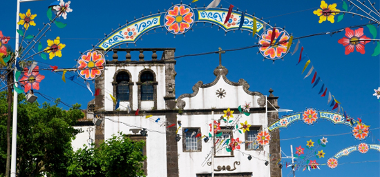

Portugal has an impressive number of spectacular festivals and celebrations.
The traditional festivals (festas) are celebrated in almost every town and village in Portugal and most of them have a patron saint, whose day is celebrated by the whole community; it mainly consists of a procession of a statue of the patron saint after the Mass from the local church, accompanied by fireworks, music, dancing and lots of food and drink. Attending a traditional festival is a great way to experience the Portuguese culture and get to know better the local people and their way of life.
New festivals are also springing up all the time throughout the country, especially film, music and food festivals.

| Date | Event | Location | Type |
|---|---|---|---|
| 20.01.2010 | Santa Maria da Feira | Feast of Fogaceiras | Cultural |

| Date | Event | Location | Type |
|---|---|---|---|
| During the 3 day period before Ash We |
Carnival Tuesday | Lisbon, Loulé, Nazaré, Torres Vedras, Ovar, Mealhada, Viana do Castelo, Sines, Alcobaça and Funchal |
Cultural |
| TBC | Fantasporto – International Science Fiction Film Festival |
Oporto | Cinema |
| TBC | Almond Blossom Golf Championship |
Lagos | Golf |
| TBC | International Almond Blossom Cross Country |
Vilamoura | Athletics |
| Date | Event | Location | Type |
|---|---|---|---|
| TBC | International Half Marathon of Lisbon |
Lisbon | Athletics |
| TBC | Madeira Golf Open |
Funchal | Golf |
| TBC | Iberian Sailing Championship |
Vilamoura | Sailing |
| TBC | International Chocolate Festival | Óbidos | Cultural |
| TBC | Hot Air Balloon Race | Around Portugal | Ballooning |
| TBC | Agricultural Festival | Beja | Cultural |
| From late Mar to late Apr | Fair of Marco | Aveiro | Cultural |

| Date | Event | Location | Type |
|---|---|---|---|
| 13.-14.04.2011 | Flower Festival | Funchal | Cultural |
| Mar/Easter | Holy Week Religious Festivities |
Braga and Óbidos | Religious |
| TBC | Algarve Open |
Vale do Lobo | Golf |
| TBC | Classic Cars Rally Pedras d’El Rei | Pedras d’El Rei | Motor |
| TBC | Estoril Open | Jamor | Tennis |
| TBC | Oporto Interceltic Festival | Oporto | Music |
| From late Mar to late Apr | Festival Music Days in Belém | Lisbon | Music |

| Date | Event | Location | Type |
|---|---|---|---|
| 12.-13.05.2011 | Pilgrimage to Fátima Sanctuary | Fátima | Religious |
| 5th Sun after Easter | Feast of Senhor Santo Cristo dos Milagres |
São Miguel | Cultural |
| End of May/Jun | Super Bock Super Rock | Lisbon | Music |
| Ascension Thu | Feast of Cruz | Guarda and Barcelos | Cultural |
| Ascension Sun | Feast of Santa Cruz | Alvarães | Cultural |
| May/Jun | International Music Festival | Faro | Music |
| TBC | Queima das Fitas | Coimbra | Cultural |
| TBC | International Horse Jumping Cup | Lisbon | Equestrian |

| Date | Event | Location | Type |
|---|---|---|---|
| 10.06.2011 | Portugal's National Day and Camões Day | Around Portugal | Cultural |
| 12.- 13.06.2011 | Feast of Santo António |
Lisbon | Cultural |
| 23.- 24.06.2011 | Feast of São João | Oporto, Braga and Aveiro | Cultural |
| 28.- 29.06.2011 | Feast of São Pedro | São Miguel | Cultural |
| TBC | Rock in Rio Lisbon | Lisbon | Music |
| TBC | Estoril Coast International Crafts Fair | Estoril | Cultural |
| TBC | Beer Festival | Oporto | Cultural |
| TBC | Serralves Foundation Festival | Oporto | Cultural |
| TBC | Festróia International Film Festival | Setúbal | Cinema |
| TBC | Atlantic Festival | Funchal | Music |
| TBC | Cherry Festival | Fundão | Cultural |
| TBC | Feast of São Gonçalo | Amarante | Cultural |
| TBC | Almada International Theatre Festival | Almada | Theatre |
| Jun/Jul | Sintra International Music Festival | Sintra | Music |
| Jun-Sep | Bullfighting Season | Santarém and Lisbon | Cultural |
| 1st week of Jun | National Agricultural Fair | Santarém | Cultural |

| Date | Event | Location | Type |
|---|---|---|---|
| TBC | Sardine Festival | Portimão | Cultural |
| TBC | Beer Festival | Silves | Cultural |
| TBC | Wine Festival | Bombarral | Cultural |
| TBC | Oporto Vintage Formula One Race | Oporto | Motor |
| TBC | Red Waistcoast Festival | Vila Franca de Xira | Cultural |
| TBC | Moorish Nights | Cancela Velha | Cultural |
| TBC | Vilar de Mouros Summer Music Festival | Vilar de Mouros | Music |
| TBC | Serralves Foundation Festival | Oporto | Cultural |
| TBC | Paredes de Coura Rock Festival | Paredes de Coura | Music |
| 1st weekend of Jul | Feast of Tabuleiros | Tomar | Cultural |
| Mid-Jun to mid-Jul | Feast of MFundão oliceiros | Aveiro | Cultural |
| Last Sat of Jul | Folk Festival | Barcelos | Cultural |
| Jul/Ago | Estoril Classic Music Festival | Estoril | Music |
| Jul-Aug | Festival of the Sea | Cascais and Estoril | Cultural |

| Date | Event | Location | Type |
|---|---|---|---|
| 1st weekend of Aug | Feast of Nossa Senhora da Boa Viagem | Peniche | Religious |
| TBC | Sardine Festival | Quarteira | Cultural |
| TBC | Feast of Nossa Senhora da Agonia | Viana do Castelo | Religious |
| TBC | Ritual Rock Nights | Oporto | Music |
| TBC | Feast of Nossa Senhora do Monte | Funchal | Cultural |
| TBC | Southwest Music Festival | Zambujeira do Mar | Music |
| TBC | Cerveira International Art Biannual | Vila Nova de Cerveira | Cultural |
| TBC | Annual Beach Rugby Cup | Around Portugal | Rugby |
| Aug-Sep | Pilgrimage to Nossa Senhora dos Remédios | Lamego | Religious |
| All August | Calouste Gulbenkian International Jazz Festival | Lisbon | Music |

| Date | Event | Location | Type |
|---|---|---|---|
| 10. - 25.09.2011 | Musica Viva Festival | Lisbon | Music |
| TBC | International Half Marathon of Lisbon | Lisbon | Athletics |
| TBC | International Equestrian Competition of Algarve | Vilamoura and Portimão | Equestrian |
| TBC | Madeira Wine Festival | Funchal and Câmara de Lobos | Cultural |
| TBC | Grape Harvest Festival | Lamego and Douro River region | Cultural |
| TBC | Avante Festival | Atalaia | Cultural |
| TBC | New Fairs | Ponte de Lima | Cultural |
| TBC | Feast of Nossa Senhora da Nazaré | Cultural | |
| Early Sep | Feast of São Paio | Aveiro | Cultural |
| Early Sep | Gastronomic Festival | Leiria | Cultural |
| 1st Sun of Sep | Feast of Nossa Senhora da Piedade | Tomar | Religious |
| Last Sun of Sep | Feast of Nossa Senhora do Ó | Oporto | Religious |
| Late Sep | Feast of Senhor da Piedade | Elvas | Religious |
| Late Sep | São Mateus Fair | Elvas | Cultural |

| Date | Event | Location | Type |
|---|---|---|---|
| 12. - 13.10.2011 | Pilgrimage to Fátima Sanctuary | Fátima | Religious |
| TBC | Estoril Open | Estoril and Cascais | Golf |
| TBC | Laser Europa Cup Portugal | Matosinhos | Sailing |
| TBC | International Biannual of Arts and Industrial Design | Marinha Grande | Cultural |
| TBC | Lisbon Fashion Week | Lisbon | Fashion |
| Mid-Oct | Santa Iria Fair | Faro | Cultural |
| Late Oct-Early Nov | National Gastronomic Festival | Santarém | Cultural |
| Late Oct-Early Nov | Festival of the Portuguese Discoveries | Lagos | Cultural |
| Late Oct-Early Nov | Amadora International Cartoon Festival | Amadora | Cultural |

| Date | Event | Location | Type |
|---|---|---|---|
| 11.11.2011 | São Martinho’s Day | Around Portugal | Cultural |
| 1st half of Nov | São Martinho Fair and National Horse Fair | Golegã | Equestrian |

| Date | Event | Location | Type |
|---|---|---|---|
| 31.12.2011 | New Year Celebrations | Lisbon and Funchal | Cultural |
| TBC | International Christmas Regatta | Cascais | Sailing |
| TBC | International Urban Culture Festival | Lisbon | Cultural |
| TBC | São Silvestre Running Race | Oporto | Athletics |